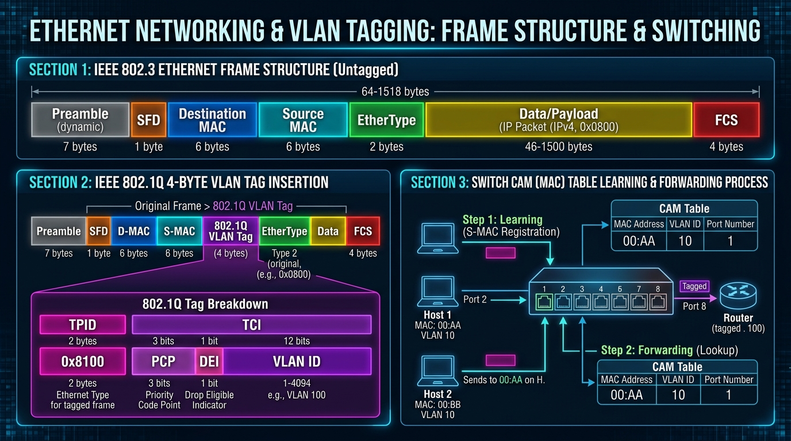

Learn the 48-bit MAC address structure, IEEE 802.3 Ethernet frame format, how Switches learn MAC addresses in CAM tables, and VLAN 802.1Q trunking concepts.
A MAC (Media Access Control) Address is a unique 48-bit (6-byte) physical hardware address burned into the ROM of a Network Interface Card (NIC).
Written in hexadecimal format: 00:1A:2B:3C:4D:5E or 00-1A-2B-3C-4D-5E.
00:1A...).01:00:5E:xx:xx:xx for IPv4 multicast).FF:FF:FF:FF:FF:FF.| Standard | IEEE Spec | Speed | Cable & Distance |
|---|---|---|---|
| Standard Ethernet | IEEE 802.3 | 10 Mbps | Cat 3 / Cat 5 UTP (100m) |
| Fast Ethernet | IEEE 802.3u | 100 Mbps | Cat 5e UTP (100m) / Fiber (2km) |
| Gigabit Ethernet | IEEE 802.3ab / 802.3z | 1 Gbps (1000 Mbps) | Cat 5e/6 UTP (100m) / Fiber (5km) |
| 10-Gigabit Ethernet | IEEE 802.3ae / 802.3an | 10 Gbps | Cat 6a UTP (100m) / Fiber (40km) |
A Layer 2 Switch maintains a **CAM (Content Addressable Memory) Table** (also called Switching Table or MAC Address Table) that maps connected MAC addresses to physical switch ports.
A VLAN (Virtual Local Area Network) is a logical grouping of network devices on one or more physical switches, configured so that they communicate as if they were connected to the same physical switch wire, regardless of physical location.
802.1Q inserts a **4-byte VLAN Tag** into the standard Ethernet frame header right after the Source MAC address.
0x8100 to identify 802.1Q tagged frame.
By default, devices on different VLANs **cannot communicate** at Layer 2. Routing at Layer 3 is required to forward packets between VLANs.
g0/0.10 for VLAN 10), each acting as the default gateway for a VLAN.interface vlan 10 with an IP address). Fast & highly scalable.